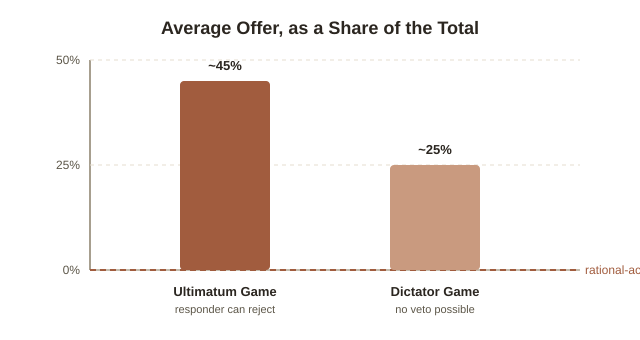

Chapter 6: Fairness Is a Preference, Not Just a Judgment Error
Five chapters so far have all been about the same basic kind of mistake: judging probability badly (Chapter 3), discounting the future too steeply (Chapter 4), treating money inconsistently depending on which mental bucket it's in (Chapter 2) — all cases of a single person's reasoning going systematically wrong. This chapter is different. It's not an error at all. It's a genuine preference — for fairness — that shows up so reliably, and gets acted on so expensively, that it has to be treated as a real input into how people behave, not a bug to be corrected.
The Ultimatum Game: burning money to punish an insult
First run by economist Werner Güth and colleagues in 1982, the setup is simple. One person (the proposer) is given a sum of money — say $10 — and offers a split to a stranger (the responder). The responder can accept, and both keep their share, or reject, in which case both get nothing. A purely self-interested responder should accept any offer above $0: even $1 is strictly better than $0, so rejecting is pure loss with no offsetting gain. In practice, offers below about 20-30% of the total (an $8/$2 split, say) get rejected roughly half the time, across a huge range of replications and cultures. People routinely give up their own money for the sole purpose of making sure someone else doesn't profit from treating them unfairly.
The Dictator Game: proving it isn't just fear of rejection
One obvious objection: maybe proposers in the Ultimatum Game aren't being fair, they're just being strategic — offering enough to avoid a rejection they'd rather not risk. The Dictator Game tests this directly by removing the responder's veto entirely: the proposer simply decides the split, and the responder has no choice but to accept whatever they're given. If the earlier fairness was purely strategic, dictators — facing zero risk of rejection — should keep everything. They don't. Average dictator offers land around 20-30% of the total, well above $0. Some genuine other-regarding preference survives even when there's no possibility of punishment for ignoring it — smaller than in the Ultimatum Game, where the threat of rejection adds real pressure, but nowhere near the purely self-interested $0 a rational-actor model predicts.

Naming the preference: inequity aversion
Economists Ernst Fehr and Klaus Schmitt formalized this into a model they called inequity aversion (the theory that people get real, measurable disutility from unequal outcomes — not just from their own outcome, but from the gap between their outcome and someone else's), published in 1999. Their key move was splitting it into two distinct discomforts: disadvantageous inequity (discomfort at having less than someone else — this is what drives Ultimatum Game rejections) and advantageous inequity (a smaller, but real, discomfort at having more than someone else — this is part of why dictators give away anything at all, even without threat of punishment). Both terms get added directly into the model as things people are trying to minimize, alongside their own payoff — fairness isn't an exception bolted onto rational self-interest, it's built into what "self-interest" actually optimizes for in real human behavior.
Where this shows up outside the lab: price gouging
Daniel Kahneman ran a 1986 study, with colleagues Jack Knetsch and Richard Thaler, asking people to judge the fairness of a hardware store raising the price of snow shovels the morning after a large snowstorm. Economically, this is textbook supply and demand — sudden demand spike, price should rise to allocate the scarce shovels efficiently. The large majority of respondents called it unfair anyway. The reasoning respondents gave centered on a concept the researchers called the entitlement to a reference price: customers feel entitled to the price that prevailed before the shortage, and a firm raising it to capture the moment is seen as exploiting need rather than responding to demand — even though nothing about the underlying economics changed. This is precisely the same asymmetry as the Ultimatum Game, just relocated from a stranger's cash split to a store's price tag: an offer (a price) that's technically available to accept gets punished anyway, here through reputational damage, boycotts, and in many jurisdictions actual anti-price-gouging law, because it reads as an unfair exploitation of a bad situation rather than a neutral market signal.
Where this shows up outside the lab: wages that don't fall
The same Kahneman, Knetsch, and Thaler survey work found something else with real macroeconomic consequences: people judge a firm cutting wages during a recession as unfair — even a profitable firm facing falling demand — but judge that exact same firm simply not renewing an expiring bonus, or replacing a departing employee at a lower starting wage, as perfectly acceptable. The dollar outcome for the firm can be identical; what changes is whether it's framed as taking something away from someone who already has it (a cut) versus not extending a gain they never had a claim to. This is a large part of why nominal wages are famously "sticky downward" in real economies — firms that need to reduce labor costs during a downturn overwhelmingly prefer layoffs to across-the-board pay cuts, even when cuts would preserve more jobs, because a pay cut reads to employees (and customers, and future job applicants) as a fairness violation, with real costs in morale, turnover, and reputation that a layoff of other people doesn't carry.
The honest caveat: this isn't quite universal human nature
A 2001 cross-cultural study by anthropologist Joseph Henrich and colleagues ran the Ultimatum Game across fifteen small-scale societies — foragers, herders, and horticulturalists with little market exposure — and found real variation, not a fixed constant. Average offers ranged from around 25% to over 50% depending on the society, and the strongest single predictor wasn't culture in some vague sense but market integration: societies with more everyday experience trading with strangers for mutual gain showed offers closer to the "fair" 50/50 split typical of industrialized-society lab results, while societies with less of that experience showed both lower offers and less punishment of low offers. The preference for fairness toward strangers isn't hardwired at a fixed strength — it looks like something that gets calibrated by how much everyday life actually depends on cooperating with people you have no other relationship with, which fits neatly with how strongly it shows up in market economies specifically.
Try this
Ideas for noticing or testing this in your own life.
- Notice the next time a price change bothers you more than the dollar amount justifies: a surge-priced ride, a restaurant's "kitchen fee," a subscription price hike — ask whether the actual cost matters, or whether it's the entitlement-to-a-reference-price reaction from the snow-shovel study.
- Notice the layoff-versus-pay-cut framing at your own workplace, or in the news: when a company needs to cut costs, watch which option it reaches for, and whether the stated reasoning ever mentions morale or fairness perception directly — it usually does, once you're listening for it.
Worth pulling on?
A few loose threads from this chapter — if any of these genuinely grab you, that's a good sign of where to go next.
- The Henrich cross-cultural result connects directly to a much bigger question about whether "human nature" findings from lab studies generalize — most behavioral economics research, including everything in Chapters 1-5, was run overwhelmingly on participants from industrialized, market-integrated societies. → A real, live methodological debate in psychology generally, sometimes called the WEIRD-samples problem (Western, Educated, Industrialized, Rich, Democratic).
- Repeated, multi-round versions of these games open up reputation and reciprocity — a one-shot Ultimatum Game and a version where the same two people play many rounds produce noticeably different behavior, since reputation and retaliation become live strategic factors, not just a one-time fairness judgment. → A natural next step if you want to keep going here: the broader field of game theory, including the Prisoner's Dilemma and repeated-game strategies like tit-for-tat.